فكرة نسخ التداول هي كسب المال. من الرائع أن التكنولوجيا ذكية والمنصة تبدو جيدة، لكن ماذا عن الأرباح؟ كم ستربح فعلاً؟ كلنا نريد حقائق واضحة — لذلك دعونا نمر على الأمر بصدق.
يعتمد على من تنسخه
عندما تمارس نسخ التداول، فأنت تختار نسخ صفقات شخص آخر تلقائياً. بالطبع، كل الناس مختلفون ويتخذون خيارات وقرارات مختلفة. متداول قد يحقق ربحاً بنسبة 60% في سنة، وآخر 30%، وآخر 120%، وقد يكون آخر قد حقق خسارة بنسبة 20% خلال نفس الفترة. لا توجد ضمانات.

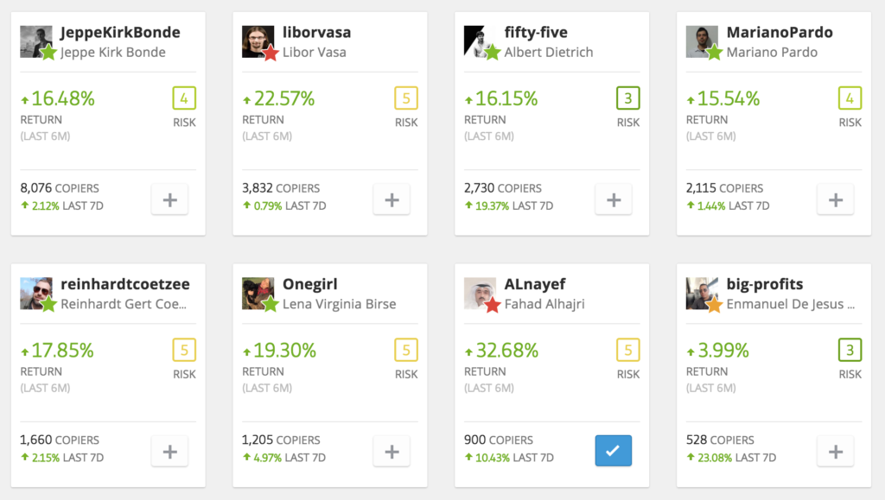
لماذا تُعرض الأرباح كنسب مئوية؟
شيء مهم جداً يجب فهمه هو أنه عندما نتحدث عن التداول، النتائج تُعرض دائماً بالنسب المئوية. "المتداول أ حقق 6% هذا الشهر." ستسمع دائماً عن الأرباح والخسائر بالنسب المئوية. لماذا؟
لأننا لا نستطيع رؤية المبلغ النقدي الفعلي الذي يتداول به كل شخص، لكن هذا لا يهم — نرى مدى فعاليتهم في التداول من خلال نسبهم المئوية. المبلغ الذي تنسخهم به هو الجزء الآخر من القصة.
كيف نحسبها — مثال بسيط
لنأخذ 'المتداول أ' كمثال. خلال الشهر القادم، يحقق المتداول أ ربحاً بنسبة 10%. أنت حالياً تنسخ المتداول أ — فكم من المال ستربح فعلاً؟
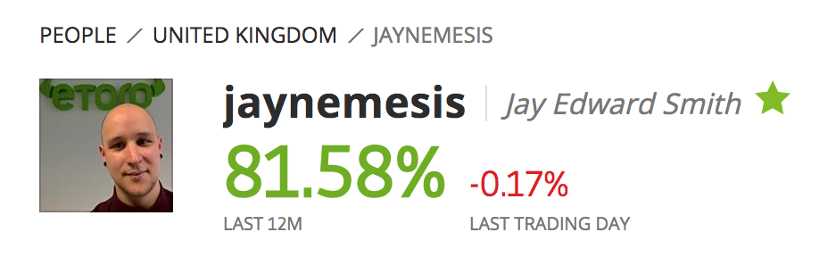
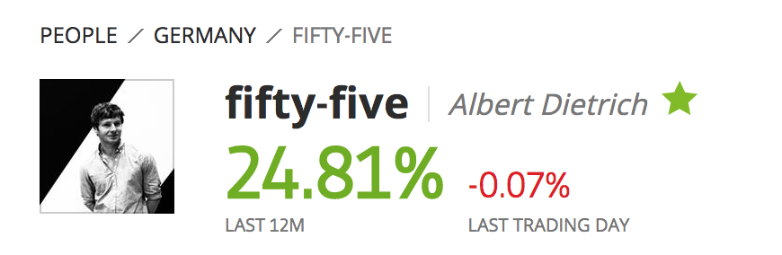
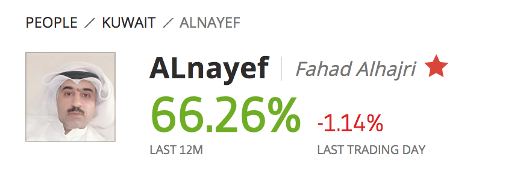

يعتمد على المبلغ الذي تنسخهم به:
- إذا نسخت المتداول أ بمبلغ €200، ستربح 10% من €200 = €20
- إذا نسخت المتداول أ بمبلغ €1,000، ستربح 10% من €1,000 = €100
- إذا نسخت المتداول أ بمبلغ €5,000، ستربح 10% من €5,000 = €500
إنها فكرة بسيطة جداً، لكن ما لم تكن معتاداً عليها، تحتاج بعض الوقت للتعوّد. بمجرد أن تفعل، يصبح كل شيء أبسط بكثير. المعادلة هي: المبلغ المنسوخ × نسبة عائد المتداول = ربحك (أو خسارتك).
لاحظ أن هذا يعمل في الاتجاهين — إذا خسروا 10%، فأنت تخسر 10% من أي مبلغ نسختهم به أيضاً.
المخاطر والعوائد
بطبيعة الحال، لأنني كنت أحاول كسب المال، بدأت أبحث عن متداولين بمخاطر أعلى يمكنهم تحقيق عوائد أعلى. تعلمت أن أنتبه لهذا الأمر.
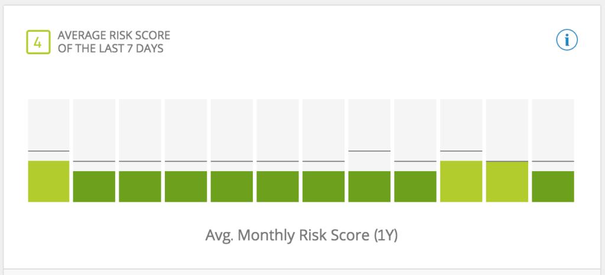
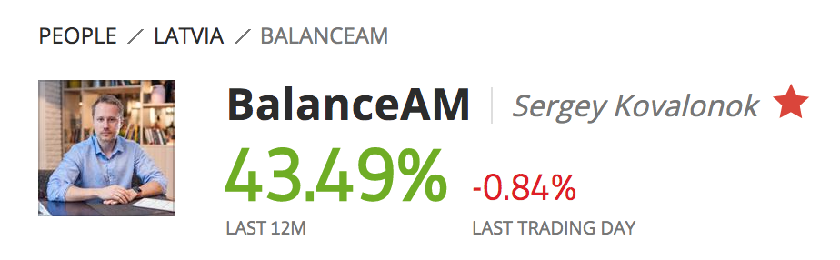
إذا كنت أنسخ المتداول أ، فإن ربح 5% يعني أنني أربح 5%. وينطبق الأمر نفسه على الخسارة — إذا خسر 5%، أخسر 5% من أي مبلغ نسخته به. عندما يتداول الناس، فهم يراهنون على حركة السعر المستقبلية لأصل ما — قد يكون سهماً في Apple، أو سعر الذهب، أو سعر Bitcoin.
التقلّب
في التداول، يمكن وصف أصل ما بأنه أكثر 'تقلّباً' أو أقل 'تقلّباً' — أي مدى تكرار التأرجحات الكبيرة صعوداً أو هبوطاً في السعر. كلما كانت التأرجحات أكبر، كلما وُصف الأصل بأنه 'متقلّب'. إذا تحرك السعر بشكل كبير، فهذا يعني أنه يمكنك أن تربح أو تخسر المزيد من المال. 'المخاطر' و'العوائد' مرتبطان ارتباطاً وثيقاً.
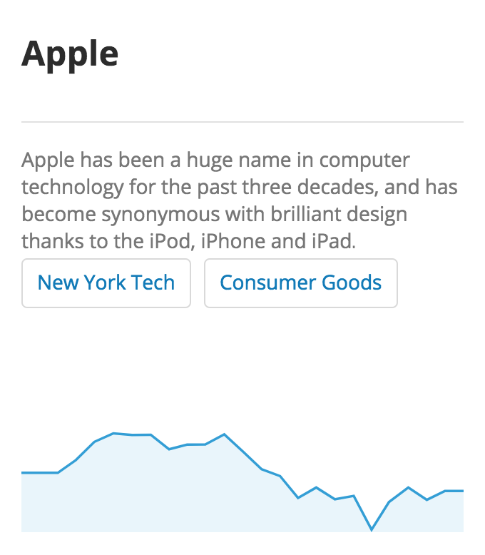
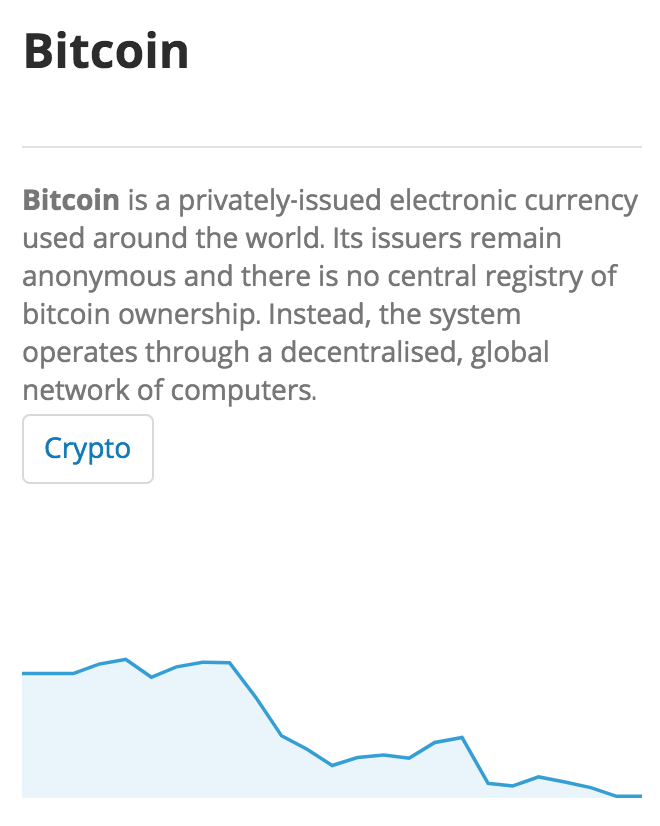
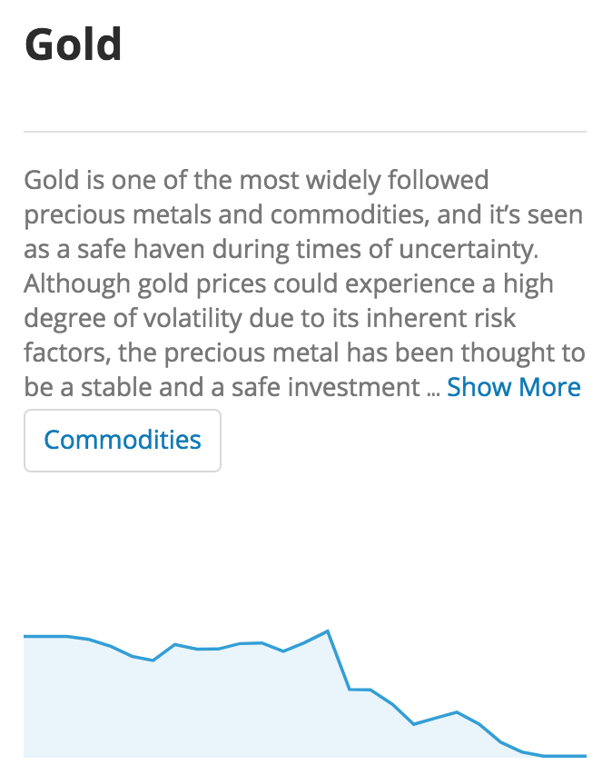
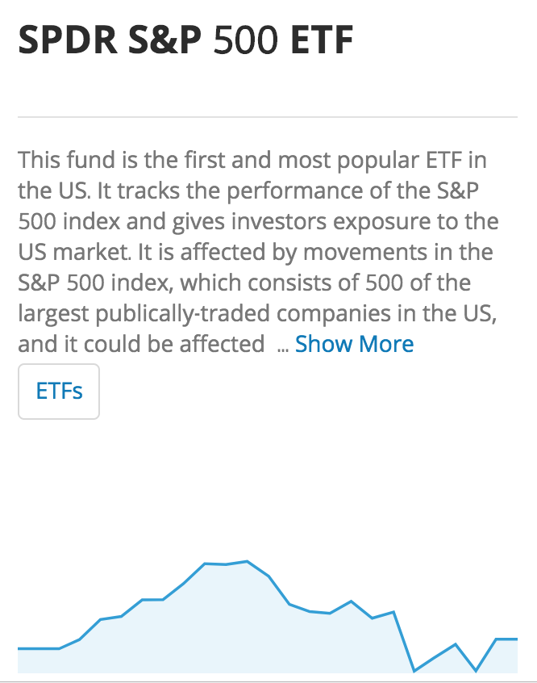
الرافعة المالية
هناك أساليب في التداول تزيد أيضاً من مخاطرك. أكبرها هي 'الرافعة المالية' — وهي في الأساس طريقة لتضخيم صفقتك، بحيث إذا كنت تتداول بمبلغ $100، يمكنك تطبيق رافعة 10x ويصبح الأمر كأنك تتداول بمبلغ $1,000. من المحتمل أن تربح أموالاً أكثر بكثير. ومن المحتمل أيضاً أن تخسر أموالاً أكثر بكثير. الرافعة المالية تزيد من المكاسب والخسائر المحتملة بشكل كبير.
ماذا يعني هذا لنسخ التداول؟
عندما بدأت أبحث عن متداولين لنسخهم يمكنهم تحقيق أكثر من 5% شهرياً، أدركت سريعاً أنه من أجل تحقيق أرباح ضخمة كل شهر، كان بعض المتداولين يستخدمون أساليب أكثر خطورة. لو نسختهم، كنت سأعرّض نفسي أيضاً لخسائر محتملة أكبر بالإضافة إلى الأرباح المحتملة التي كنت أسعى إليها.
هذا سؤال يجب على كل شخص أن يقرره بنفسه: كم من المخاطر أريد تحمّلها بحثاً عن الأرباح؟ كم يمكنني أن أتحمل خسارته فعلاً؟
تجربتي الشخصية مع المخاطر
بدأت بمخاطر منخفضة نسبياً، ثم انجذبت إلى العوائد الأعلى لمتداولي العملات المشفرة وافترضت أنه بما أن العملات المشفرة كانت ترتفع طوال الوقت، فهناك الكثير من العوائد مع مخاطر قليلة جداً. لكن حيث يوجد احتمال لعوائد كبيرة، هناك دائماً احتمال لمخاطر كبيرة — كما رأيت عندما تراجعت أسواق العملات المشفرة في أوائل 2018.
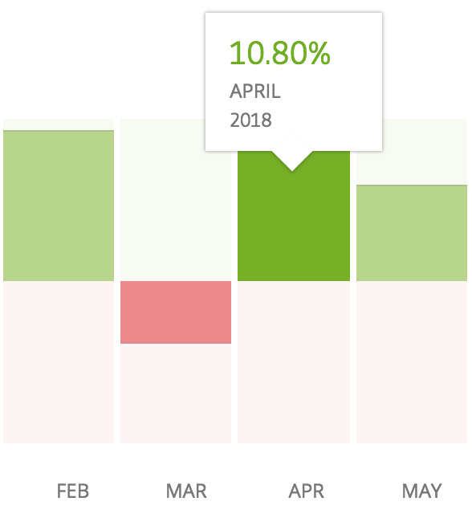
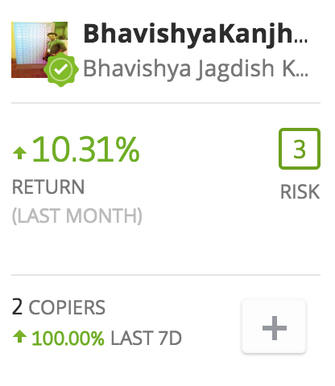
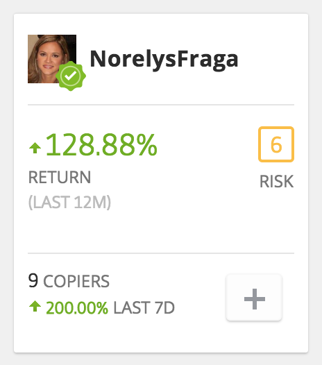
الآن أبحث عن متداولين حققوا نسب أرباح جيدة خلال السنة أو السنتين الماضيتين، لكنهم يُظهرون أيضاً قدرة واضحة على الحفاظ على مستويات مخاطرهم منخفضة. إنها مقايضة جيدة، وآمل أن تنجح على المدى الطويل دون أن يشيب شعري بين ليلة وضحاها.
وضع توقعات واقعية
أعرف الآن أنه من الصعب كسب £1,000 شهرياً عندما لديك فقط £1,000 أو £2,000 للاستثمار. سيتطلب ذلك ملاحقة متداولين عاليي المخاطر، وقد ينجح الأمر، لكن إحصائياً ستكون أكثر عرضة لخسارة أموالك. الهدف الأكثر واقعية هو نمو ثابت ومعتدل من متداولين بسجل حافل ومتسق.